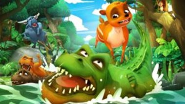

Pada suatu hari, si Kancil, binatang yang katanya cerdik itu, tengah berjalan-jalan di pinggir hutan. Berhubung di dalam hutan itu terlalu gelap karena pohon-pohonnya juga sangat lebat, maka dirinya hanya ingin mencari udara segar sambil melihat matahari yang cerah bersinar. Si Kancil ingin berjemur sebentar di bawah terik matahari. Tepatnya setelah sampai di pinggir sungai besar, dirinya merasa perutnya lapar sekali. “Krucuk…krucuk…” begitu kira-kira bunyi perut si Kancil yang tengah merasa lapar. Lantas, si Kancil membayangkan betapa enaknya kalau dirinya makan makanan kesukaannya yaitu timun. Namun sayangnya, kebun timun yang berbuah ranum itu ada di seberang sungai besar itu. Si Kancil diam dan berpikir akan bagaimana cara menyeberangi sungai besar ini ya…
